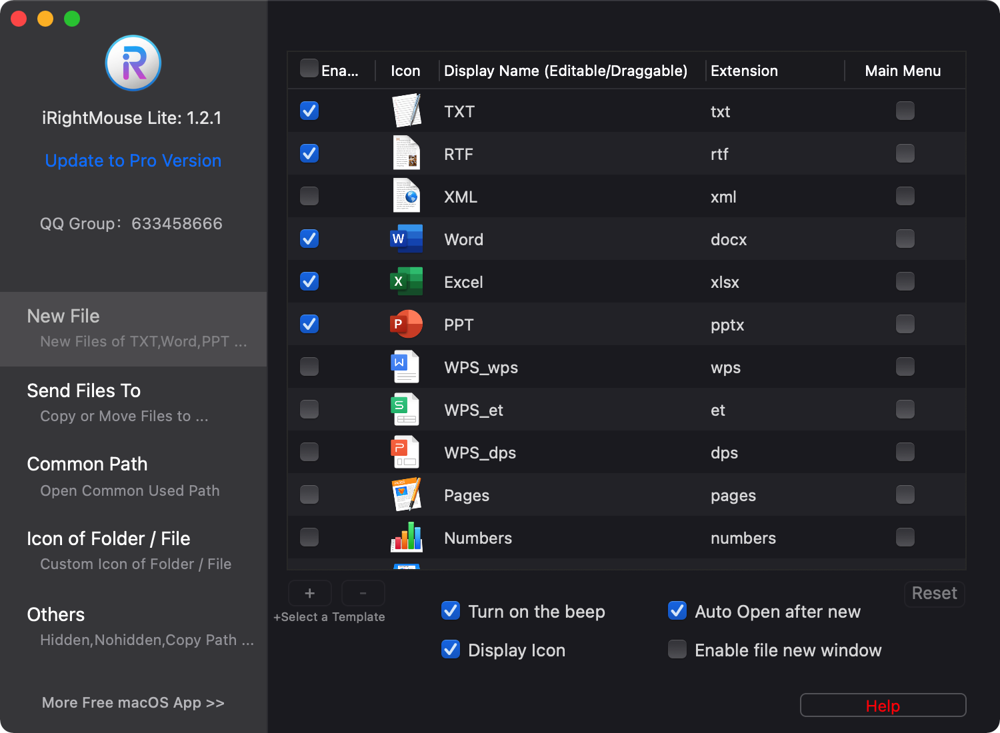
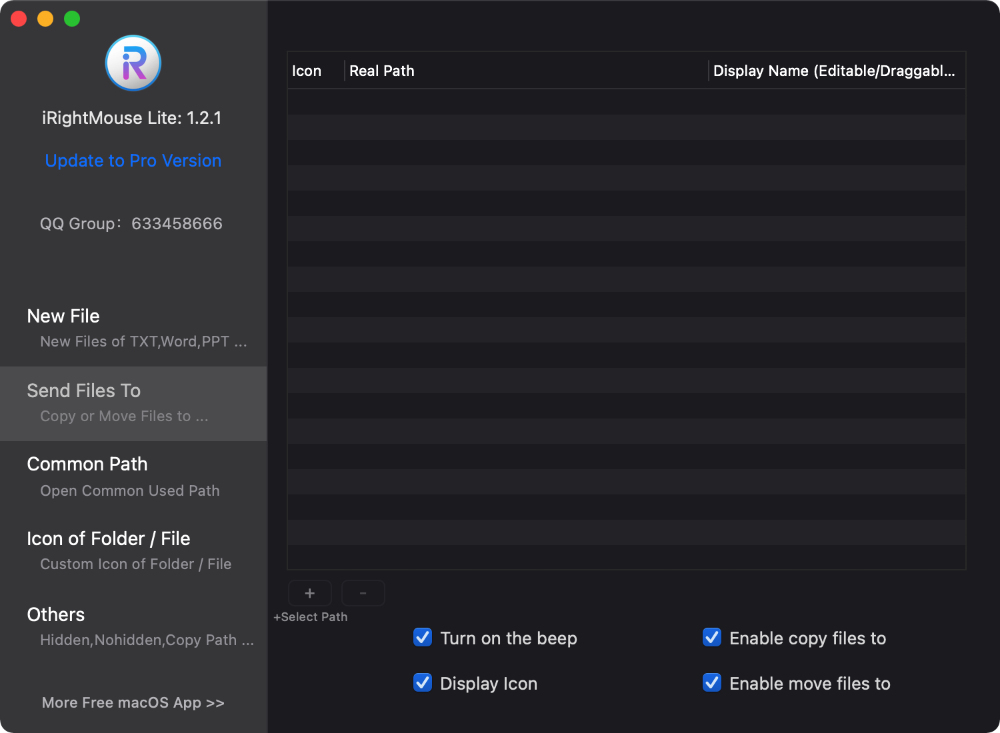
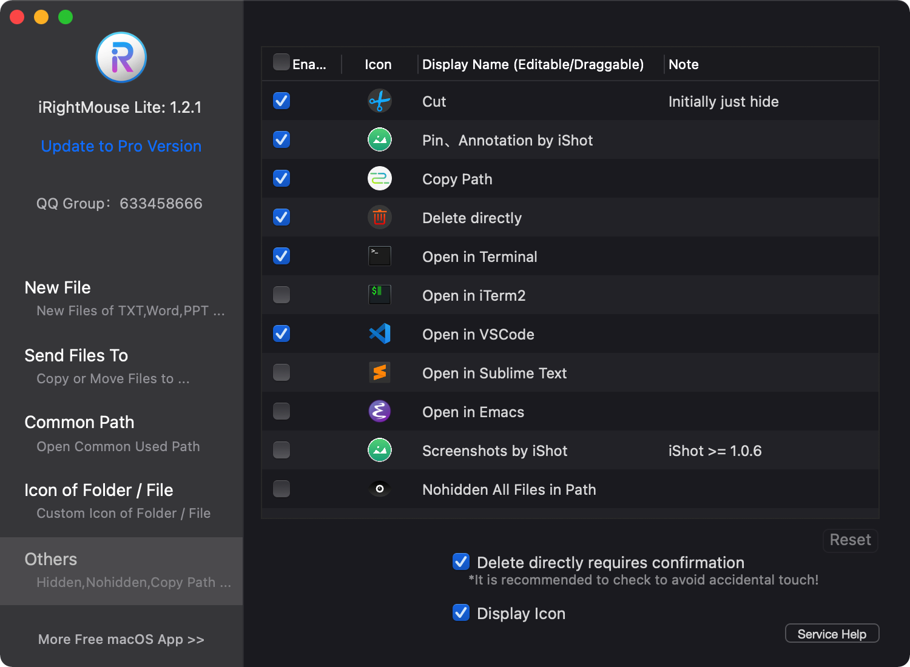
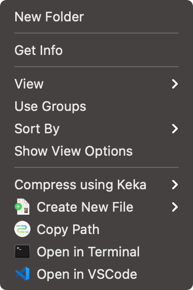

TreeviewCopyright © aleen42 all right reserved, powered by aleen42
iRightMouse Lite - 免费Mac鼠标右键增强软件
背景
- Windows使用习惯的用户都知道，右键功能很强大，也很方便。比如：可以通过右键创建文件
- Mac用户也会有一个痛点，就是在Finder的某个目录里想直接启动Terminal（就是shell的位置正好是这个目录）
功能
- 右键创建文件 TXT/RTF/XML/Word/Excel/PPT/WPS/Pages/Numbers/Keynote/AI/PSD/Markdown/等文件类型 
- 支持用户自己创建文件格式
- Send files to
- Copy files to， 图下的+号，可以添路径，不过我没加，貌似没有这需求，都往一个目录里发 
- Common Directory
- Customize folder icons
- Cut/paste files
- Copy path
- Specity the tool to enter the current path
- Hide/Show files
- Delete files completely
- The picture is converted to macOS icon set
- Right-click service menu:
- Baidu translator
- Google translator
- …… 
算的上是一款良心软件，这么多的功能，免费
虽然我并没有用他的所有的功能，但是还是十分感谢开发者，毕竟是免费！~~~
这款软件也有一个付费版本iRightMouse Pro，具体的我也不知道有什么功能上的区别，我现在只用到- 新建（很少用）
- Copy Path
- Open In Terminal
- Open in VSCode 所以应该不需要付费版
使用苹果，还是需要符合苹果的操作习惯，这样子比较省力
